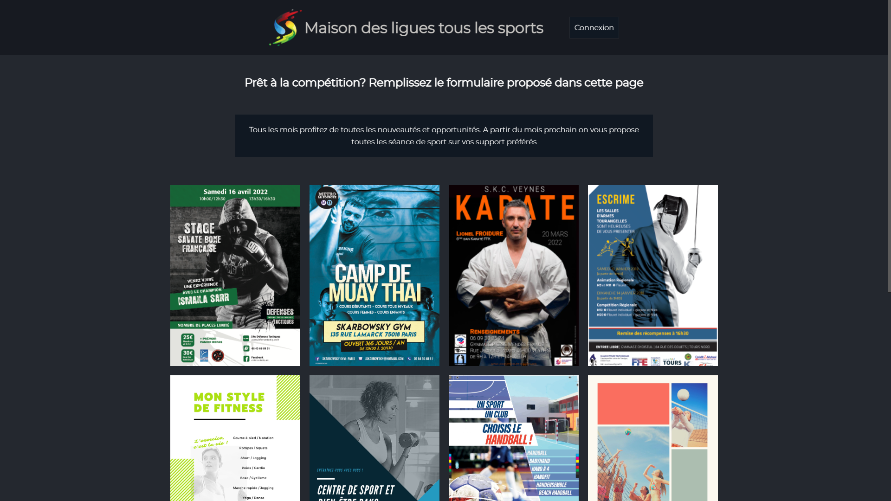

AP Java
AP Web
TP Streaming
TP ayant pour objectif la mise en page d'un site de streaming comprenant une page formulaire ainsi qu'un modale en JS sur les images.
Reproduction Login Instagram
TP ayant pour objectif la reproduction de la page de connexion d'Instagram.
La connexion devant se faire Javascript et comprenant des conditions.
Reproduction Google
TP ayant pour objectif la reproduction de la fameuse page d'accueil de Google.
L'outil de recherche devant être fonctionnel sans avoir recourt à du Javascript.
Blog Singe
TP ayant pour objectif la production d'un blog d'après un wireframe tout en ayant le libre choix sur le thème et le design.
Projet Web : Stage (Mairie)
TP ayant pour objectif la production d'une carte de la ville de Bonneuil comprenant la présence de marqueurs pouvant être placé manuellement et pouvant déclanchés une alerte contenant une IP fournie.
- ▸ Participer à l’évolution d’un site Web exploitant les données de l’organisation. = Site web mis en place avec les assets de la mairie.
- ▸ Analyser les objectifs et les modalités d’organisation d’un projet = Description précise des fonctions primaires du projet par le chef du service.
- ▸ Planifier les activités = Projet effectué en parallèle à d'autres tâches, mise en place d'un planning d'activité afin de gérer ça.
- ▸ Évaluer les indicateurs de suivi d’un projet et analyser les écarts = Modifications ou ajouts demandées et ajoutées à la fin d'une étape si elle devait-être validée par le chef du service.
- ▸ Déployer un service = Déploiement du site au sein de la mairie.
- ▸ Accompagner les utilisateurs dans la mise en place d’un service = Rédaction d'un support d'aide technique à la résolution de problèmes à destination des collaborateurs.
- ▸ Mettre en place son environnement d’apprentissage personne = Projet réalisé sans aides de l'API Google Maps par contrainte personnelle.
Banque